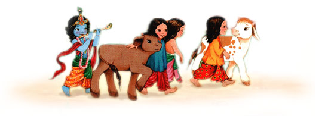

Queridos amigos, gracias por visitarnos. Nosotros somos un grupo de niños de diferentes edades que vivimos en diferentes partes del mundo y buscamos servir a los niños de Krishna y sus devotos. Amar a Dios, ser agradecidos y respetar a todas las entidades vivientes, es la meta de todo ser conciente. Asi pues este website esta dedicado a presentar las enseñanzas e historias de Krishna, el pastorsito de vacas. Las historias de Krishna y sus sirvientes son una fuente de enseñanzas de fraternidad, amor y armonia. (Mira la lista de los artistas y productores principales detras de Damodara.de <<< AQUI >>> ) ( O lée nuestra lista de Agradecimientos especiales )
Dios viene personalmente a este mundo en diferentes momentos, formas y lugares cuando quiera que sea necesario, para protejer a los indefensos y establecer los principios del amor puro. (Mira los principios del amor universal). Dios siempre está presente en cada átomo de su creación, en el corazón de cada ser, pero a su vez él se manifiesta personalmente por su dulce deseo para ejecutar diferentes actividades trascendentales. Segun los Vedas, y las evidencias historicas, Krishna aparecio hace 5000 años atras en India, en el hermoso pueblo de Vrindavan, un pueblito que hasta hoy en día existe.
Amor a Dios y a Su creación es la verdadera formula de la paz. ( mira la revolucion de la cuchara.org). Mientras no tratemos con igual derechos de existencia a todas las entidades vivientes, humanos, animales o plantas, nunca habra paz en nuestro mundo. La forma particular en la que tú, o alguien crea en Dios, no es del todo tan importante, lo importante es lo que hay en tú corazón, y que tú fe no perjudique o hiera a otros. Instituciones no dan amor, amor es de corazón, y el corazón no requiere instituciones para amar. Esa es la mejor religión.
> Para ver el mapa de Vraj Mandal has click en la imagen <

Cuando Krishna era pequeño, él vivia en Vraja, al norte de India, en donde paso los primeros 16 años de su vida. Vraja es una tierra de pastores de vacas. Ellos protejen y sirven a las vacas y su riqueza es leche y yogurt. Sus habitantes son llamados Vrajavasis. En Vraja hay 12 bosques principales y Vridavan es el preferido de Krishna.

Aqui esta el arbol familiar de Krishna ... (en construcción)